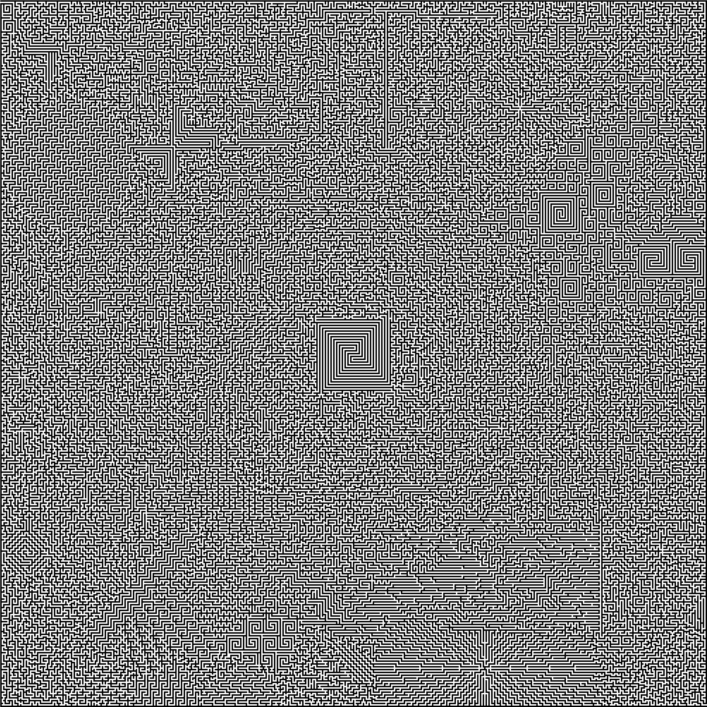

Morten Skou Andersen & de mennesker han normalt sammenligner sig med
Digressioner
21. juni 2014, cd og download; Juni 2015, vinyl (bh1).
Udgivet af bryggeriet Beer Here.
Anmeldelser
Digressioner – svinkeærinder – er væsentligt skarpere og mere to-the-point end det meste andet af tidens danske sangskrivning (Gaffa).
Forfriskende skæv og herligt anderledes! (Rootszone).
Side A
Vækst
Una har ikke noget ansigt
Scientology
Skybruddet
Brev til Anders Breivik
Felix Baumgartner eller Himmeporten
Den gamle dame
Side B
Landskabet
Fyret på Anholt
Hilsen den afskyelige snemand
Pilgrimssang
Billede og lyd
Al tekst og musik af Morten Skou Andersen.
Art work af Anna Weber Henriksen.
Labyrinten er tegnet af Morten Skou Andersen.
Indspillet og mikset af Jesper Folke Olsen, alias Backdoor Red.
Mastereret af ET Mastering.
Gæstemusikere
Morten Krogh: mundharmonika, kor på Skybruddet.
Øssur Bæk: violin på Fyret på Anholt.
Morten Skou Andersen & de mennesker han normalt sammenligner sig med
Adam Juhl Norholt: bas, kor.
Jacob Karl Viktor Lundgren Gantana Lövenlund: flygel, elklaver, elorgel, kor.
Rasmus Emil Mikkelsen: trommer, kor.
Morten Skou Andersen: akustisk guitar, vokal.